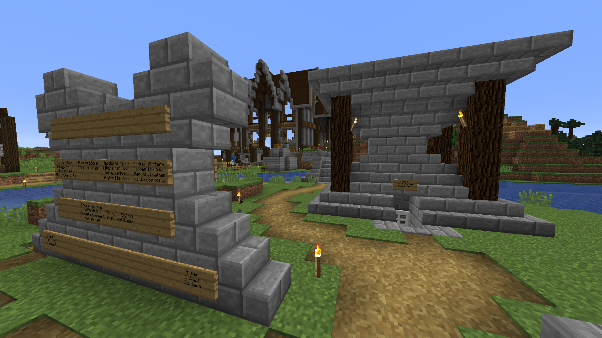

Karls affärer

Karls första affär var en av de tre kycklingaffärerna på servern, dock hade han ingen ingen affärsbyggnad, man fick snacka med honom själv om man ville köpa.Karls jakt och fiske samt köp och sälj
Han skapade sedan en slags reklamtavla/messageboard mitt i centrum som han kallade Karls köp och sälj där man kunde köpa skyltar för att göra reklam för sin business. Jacobs ofärdiga whiteboard skulle konurera med Karls köp och sälj, men servern dog ut innan han han sätta igång affären.
Karls sista affär var Karls jakt och fiske som låg mellan centrum och hans hus. Där sålde han pilar, men också fiskespön och pilbågar som han fick från sin AFK-fiskefarm. Han lyckades sälja totalt en pilbåge till Jacob.